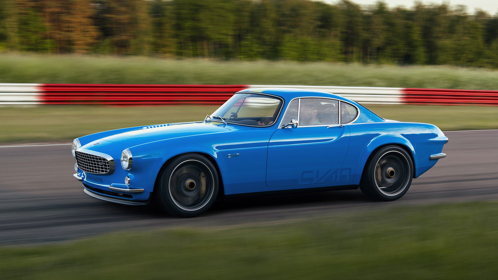

Figure is for wrapping your image content around it
Section is a thematic grouping of content
The project was originally started in 1957 because Volvo wanted a sports car to compete in the US & European markets, despite the fact that their previous attempt, the P1900, had failed to take off with only 68 cars sold. The man behind the project was an engineering consultant to Volvo, Helmer Petterson, who in the 1940s was responsible for the Volvo PV444. Unknown to him, design work was done by his son Pelle, under the tutelage of Italian auto stylist Pietro Frua while Frua's studio as a subsidiary of the prestigious carrozzeria Ghia. Volvo insisted it was an Italian design by Frua and only in 2009 officially recognized Pelle Petterson's authorship.[10] Carrozzeria Frua built the first three prototypes between September 1957 and early 1958, later designated by Volvo in September 1958: P958-X1, P958-X2 and P958-X3 (P:Project, 9:September, 58:Year 1958 = P958, X: eXperimental).
In December 1957 Helmer Petterson drove X1, (the first hand-built P1800 prototype) to Osnabrück, West Germany, headquarters of Karmann. Petterson hoped that Karmann would be able to take on the tooling and building of the P1800. Karmann's engineers had already been preparing working drawings from the wooden styling buck at Frua. Petterson and Volvo chief engineer Thor Berthelius met there, tested the car and discussed the construction with Karmann. They were ready to build it and this meant that the first cars could hit the market as early as December 1958. But in February, Karmann's most important customer, Volkswagen, forbade Karmann to take on the job.[citation needed] They feared that the P1800 would compete with the sales of their own cars, and threatened to cancel all their contracts with Karmann if they took on this car. This setback almost caused the project to be abandoned.
Other German firms, NSU, Drautz and Hanomag, were contacted but none was chosen because Volvo did not believe they met Volvo's manufacturing quality-control standards.
It began to appear that Volvo might never produce the P1800. This motivated Helmer Petterson to obtain financial backing from two financial firms with the intention of buying the components directly from Volvo and marketing the car himself. At this point, Volvo had made no mention of the P1800 and the factory would not comment. Then a press release surfaced with a photo of the car, putting Volvo in a position where they had to acknowledge its existence. These events influenced the company to renew its efforts: the car was presented to the public for the first time at the Brussels Motor Show in January 1960 and Volvo turned to Jensen Motors, whose production lines were under-utilised, and they agreed a contract for 10,000 cars.[citation needed] The Linwood, Scotland, body plant of manufacturer Pressed Steel was in turn sub-contracted by Jensen to create the unibody shells, which were then taken by rail to be assembled at Jensen in West Bromwich, England. In September 1960, the first production P1800 (for the 1961 model year) left Jensen for an eager public.